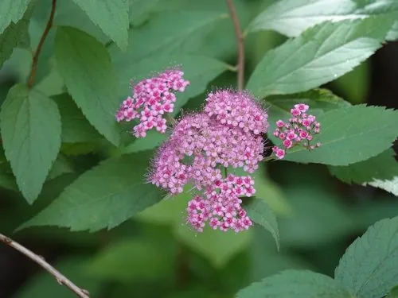

灌木与花木 · 植物界
日本绣线菊 Spiraea japonica

原产日本的落叶小灌木，夏季开粉红色小花、聚成伞房花序，花期长、耐修剪，是花境与绿篱的常用植物。
- 分类
- 门被子植物门纲木兰纲目蔷薇目科蔷薇科属绣线菊属
- 栖息环境
- 海拔 1500 米以下的山坡、林缘与城市绿地，喜光耐寒耐旱
- 地理分布
- 原产日本、朝鲜半岛及中国，中国各地广泛栽培
- 保护级别
- 暂无评估；中国未列入国家重点保护野生植物名录
物种志
日本绣线菊为落叶小灌木，高可达 1.5 m，枝条细长、直立或开展；叶片卵形至卵状披针形，边缘具缺刻状重锯齿。花期 6–7 月，复伞房花序顶生，由多数粉红色小花组成，花径约 5 mm，雄蕊长于花瓣，盛开时花团锦簇；蓇葖果成熟时开裂，种子细小。
日本绣线菊原产日本、朝鲜半岛及中国，中国各地栽培，喜光、耐寒、耐旱，适应性强，对土壤要求不严。花期长、花量多，是夏季重要的观花灌木，常被用于花境、绿篱、岩石园与庭院绿化；耐修剪，花后修剪整形可促发新枝。日本绣线菊的叶片与花均可入药，有清热解毒之效；其栽培品种较多，有金叶、粉花等园艺类型。绣线菊属植物全球约 100 种，中国是其主要分布中心之一。
形态与习性
- 株高可达 1.5 m，枝条细长
- 花期6–7 月，花粉红色
- 果期8–9 月，蓇葖果开裂
- 光照喜光，不耐长期荫蔽
- 水分耐旱，怕积水
- 土壤适应性强，各类土壤均可生长
- 主要用途花境与绿篱、庭院观赏、叶花入药
趣味知识
- 日本绣线菊夏季开粉红色小花，花序密集，是花境中的常见植物。
- 日本绣线菊耐修剪，花后修剪可促发新枝、再次开花。
- 绣线菊属植物全球约 100 种，中国是其主要分布中心之一。
- 日本绣线菊有金叶、粉花等园艺品种，叶色与花色变化丰富。